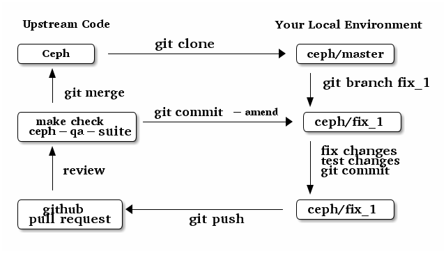

向 Ceph 贡献：开发者指南¶
| 作者: | Loic Dachary |
|---|---|
| 作者: | Nathan Cutler |
| 许可证: | Creative Commons Attribution-ShareAlike (CC BY-SA) |
Note
旧的 (pre-2016) 开发者文档已经挪到了 内部开发者文档 。
Contents
简介¶
This guide has two aims. First, it should lower the barrier to entry for software developers who wish to get involved in the Ceph project. Second, it should serve as a reference for Ceph developers.
We assume that readers are already familiar with Ceph (the distributed object store and file system designed to provide excellent performance, reliability and scalability). If not, please refer to the project website and especially the publications list.
Since this document is to be consumed by developers, who are assumed to have Internet access, topics covered elsewhere, either within the Ceph documentation or elsewhere on the web, are treated by linking. If you notice that a link is broken or if you know of a better link, please report it as a bug.
必备知识¶
本章包含必要信息，每个 Ceph 开发者都应该知道。
项目领袖¶
Ceph 项目是由 Sage Weil 领导的。另外，各主要项目组件有自己的领导，下面的表格罗列了所有领导、以及他们在 GitHub 上的昵称。
| Scope | Lead | GitHub nick |
|---|---|---|
| Ceph | Sage Weil | liewegas |
| RADOS | Samuel Just | athanatos |
| RGW | Yehuda Sadeh | yehudasa |
| RBD | Jason Dillaman | dillaman |
| CephFS | John Spray | jcsp |
| Build/Ops | Ken Dreyer | ktdreyer |
上述表格里的 Ceph 专有缩写在 体系结构 里面有解释。
源代码仓库¶
The source code of Ceph lives on GitHub in a number of repositories below the Ceph “organization”.
To make a meaningful contribution to the project as a developer, a working knowledge of git is essential.
Although the Ceph “organization” includes several software repositories, this document covers only one: https://github.com/ceph/ceph.
Redmine 问题跟踪器¶
Although GitHub is used for code, Ceph-related issues (Bugs, Features, Backports, Documentation, etc.) are tracked at http://tracker.ceph.com, which is powered by Redmine.
The tracker has a Ceph project with a number of subprojects loosely corresponding to the various architectural components (see 体系结构).
Mere registration in the tracker automatically grants permissions sufficient to open new issues and comment on existing ones.
要报告软件缺陷或者提议新功能，请跳转到 Ceph 项目并点击 New issue 。
邮件列表¶
Ceph 的开发邮件讨论是通过邮件列表 ceph-devel@vger.kernel.org 进行的。这个邮件列表对所有人开放，把下面这行发送到 majordomo@vger.kernel.org 即可订阅：
subscribe ceph-devel
要作为邮件正文发出。
There are also other Ceph-related mailing lists.
IRC¶
In addition to mailing lists, the Ceph community also communicates in real time using Internet Relay Chat.
See https://ceph.com/resources/mailing-list-irc/ for how to set up your IRC client and a list of channels.
补丁的提交¶
The canonical instructions for submitting patches are contained in the the file CONTRIBUTING.rst in the top-level directory of the source-code tree. There may be some overlap between this guide and that file.
All newcomers are encouraged to read that file carefully.
用 ccache 加速本地构建¶
Rebuilds of the ceph source tree can benefit significantly from use of ccache. Many a times while switching branches and such, one might see build failures for certain older branches mostly due to older build artifacts. These rebuilds can significantly benefit the use of ccache. For a full clean source tree, one could do
$ make clean
# note the following will nuke everything in the source tree that
# isn't tracked by git, so make sure to backup any log files /conf options
$ git clean -fdx; git submodule foreach git clean -fdx
ccache is available as a package in most distros. To build ceph with ccache one can:
$ cmake -DWITH_CCACHE=ON ..
ccache can also be used for speeding up all builds in the system. for more details refer to the run modes of the ccache manual. The default settings of ccache can be displayed with ccache -s.
Note
It is recommended to override the max_size, which is the size of cache, defaulting to 10G, to a larger size like 25G or so. Refer to the configuration section of ccache manual.
补丁移植（ Backporting ）¶
All bugfixes should be merged to the master branch before being backported. To flag a bugfix for backporting, make sure it has a tracker issue associated with it and set the Backport field to a comma-separated list of previous releases (e.g. “hammer,jewel”) that you think need the backport. The rest (including the actual backporting) will be taken care of by the Stable Releases and Backports team.
What is merged where and when ?¶
Commits are merged into branches according to criteria that change during the lifecycle of a Ceph release. This chapter is the inventory of what can be merged in which branch at a given point in time.
开发版（即 x.0.z ）¶
What ?¶
- features
- bug fixes
Where ?¶
Features are merged to the master branch. Bug fixes should be merged to the corresponding named branch (e.g. “jewel” for 10.0.z, “kraken” for 11.0.z, etc.). However, this is not mandatory - bug fixes can be merged to the master branch as well, since the master branch is periodically merged to the named branch during the development releases phase. In either case, if the bugfix is important it can also be flagged for backport to one or more previous stable releases.
When ?¶
After the stable release candidates of the previous release enters phase 2 (see below). For example: the “jewel” named branch was created when the infernalis release candidates entered phase 2. From this point on, master was no longer associated with infernalis. As soon as the named branch of the next stable release is created, master starts getting periodically merged into it.
Branch merges¶
- The branch of the stable release is merged periodically into master.
- The master branch is merged periodically into the branch of the stable release.
- The master is merged into the branch of the stable release immediately after each development x.0.z release.
稳定版候选（即 x.1.z ）阶段一¶
What ?¶
- bug fixes only
Where ?¶
The branch of the stable release (e.g. “jewel” for 10.0.z, “kraken” for 11.0.z, etc.) or master. Bug fixes should be merged to the named branch corresponding to the stable release candidate (e.g. “jewel” for 10.1.z) or to master. During this phase, all commits to master will be merged to the named branch, and vice versa. In other words, it makes no difference whether a commit is merged to the named branch or to master - it will make it into the next release candidate either way.
When ?¶
After the first stable release candidate is published, i.e. after the x.1.0 tag is set in the release branch.
Branch merges¶
- The branch of the stable release is merged periodically into master.
- The master branch is merged periodically into the branch of the stable release.
- The master is merged into the branch of the stable release immediately after each x.1.z release candidate.
稳定版候选（即 x.1.z ）阶段二¶
What ?¶
- bug fixes only
Where ?¶
The branch of the stable release (e.g. “jewel” for 10.0.z, “kraken” for 11.0.z, etc.). During this phase, all commits to the named branch will be merged into master. Cherry-picking to the named branch during release candidate phase 2 is done manually since the official backporting process only begins when the release is pronounced “stable”.
When ?¶
After Sage Weil decides it is time for phase 2 to happen.
Branch merges¶
- The branch of the stable release is merged periodically into master.
稳定版（即 x.2.z ）¶
What ?¶
- bug fixes
- features are sometime accepted
- commits should be cherry-picked from master when possible
- commits that are not cherry-picked from master must be about a bug unique to the stable release
- see also the backport HOWTO
Where ?¶
The branch of the stable release (hammer for 0.94.x, infernalis for 9.2.x, etc.)
When ?¶
After the stable release is published, i.e. after the “vx.2.0” tag is set in the release branch.
分支合并¶
不会再并入。
问题跟踪¶
See Redmine 问题跟踪器 for a brief introduction to the Ceph Issue Tracker.
Ceph developers use the issue tracker to
1. keep track of issues - bugs, fix requests, feature requests, backport requests, etc.
2. communicate with other developers and keep them informed as work on the issues progresses.
问题跟踪器惯例¶
When you start working on an existing issue, it’s nice to let the other developers know this - to avoid duplication of labor. Typically, this is done by changing the Assignee field (to yourself) and changing the Status to In progress. Newcomers to the Ceph community typically do not have sufficient privileges to update these fields, however: they can simply update the issue with a brief note.
| Status | Meaning |
|---|---|
| New | Initial status |
| In Progress | Somebody is working on it |
| Need Review | Pull request is open with a fix |
| Pending Backport | Fix has been merged, backport(s) pending |
| Resolved | Fix and backports (if any) have been merged |
基本工作流¶
The following chart illustrates basic development workflow:

Below we present an explanation of this chart. The explanation is written with the assumption that you, the reader, are a beginning developer who has an idea for a bugfix, but do not know exactly how to proceed.
更新追踪器¶
Before you start, you should know the 问题跟踪 number of the bug you intend to fix. If there is no tracker issue, now is the time to create one.
The tracker is there to explain the issue (bug) to your fellow Ceph developers and keep them informed as you make progress toward resolution. To this end, then, provide a descriptive title as well as sufficient information and details in the description.
If you have sufficient tracker permissions, assign the bug to yourself by changing the Assignee field. If your tracker permissions have not yet been elevated, simply add a comment to the issue with a short message like “I am working on this issue”.
上游源码¶
This section, and the ones that follow, correspond to the nodes in the above chart.
The upstream code lives in https://github.com/ceph/ceph.git, which is sometimes referred to as the “upstream repo”, or simply “upstream”. As the chart illustrates, we will make a local copy of this code, modify it, test our modifications, and submit the modifications back to the upstream repo for review.
A local copy of the upstream code is made by
- forking the upstream repo on GitHub, and
- cloning your fork to make a local working copy
See the the GitHub documentation for detailed instructions on forking. In short, if your GitHub username is “mygithubaccount”, your fork of the upstream repo will show up at https://github.com/mygithubaccount/ceph. Once you have created your fork, you clone it by doing:
$ git clone https://github.com/mygithubaccount/ceph
While it is possible to clone the upstream repo directly, in this case you must fork it first. Forking is what enables us to open a GitHub 拉取请求.
For more information on using GitHub, refer to GitHub Help.
本地环境¶
In the local environment created in the previous step, you now have a copy of the master branch in remotes/origin/master. Since the fork (https://github.com/mygithubaccount/ceph.git) is frozen in time and the upstream repo (https://github.com/ceph/ceph.git, typically abbreviated to ceph/ceph.git) is updated frequently by other developers, you will need to sync your fork periodically. To do this, first add the upstream repo as a “remote” and fetch it:
$ git remote add ceph https://github.com/ceph/ceph.git
$ git fetch ceph
Fetching downloads all objects (commits, branches) that were added since the last sync. After running these commands, all the branches from ceph/ceph.git are downloaded to the local git repo as remotes/ceph/$BRANCH_NAME and can be referenced as ceph/$BRANCH_NAME in certain git commands.
For example, your local master branch can be reset to the upstream Ceph master branch by doing:
$ git fetch ceph
$ git checkout master
$ git reset --hard ceph/master
Finally, the master branch of your fork can then be synced to upstream master by:
$ git push -u origin master
缺陷修订分支¶
Next, create a branch for the bugfix:
$ git checkout master
$ git checkout -b fix_1
$ git push -u origin fix_1
This creates a fix_1 branch locally and in our GitHub fork. At this point, the fix_1 branch is identical to the master branch, but not for long! You are now ready to modify the code.
在本地修正缺陷¶
At this point, change the status of the tracker issue to “In progress” to communicate to the other Ceph developers that you have begun working on a fix. If you don’t have permission to change that field, your comment that you are working on the issue is sufficient.
Possibly, your fix is very simple and requires only minimal testing. More likely, it will be an iterative process involving trial and error, not to mention skill. An explanation of how to fix bugs is beyond the scope of this document. Instead, we focus on the mechanics of the process in the context of the Ceph project.
A detailed discussion of the tools available for validating your bugfixes, see the 测试 chapter.
For now, let us just assume that you have finished work on the bugfix and that you have tested it and believe it works. Commit the changes to your local branch using the --signoff option:
$ git commit -as
and push the changes to your fork:
$ git push origin fix_1
GitHub 拉取请求¶
The next step is to open a GitHub pull request. The purpose of this step is to make your bugfix available to the community of Ceph developers. They will review it and may do additional testing on it.
In short, this is the point where you “go public” with your modifications. Psychologically, you should be prepared to receive suggestions and constructive criticism. Don’t worry! In our experience, the Ceph project is a friendly place!
If you are uncertain how to use pull requests, you may read this GitHub pull request tutorial.
For some ideas on what constitutes a “good” pull request, see the Git 提交的实践真知 article at the OpenStack 项目百科.
Once your pull request (PR) is opened, update the 问题跟踪 by adding a comment to the bug pointing the other developers to your PR. The update can be as simple as:
*PR*: https://github.com/ceph/ceph/pull/$NUMBER_OF_YOUR_PULL_REQUEST
全自动的 PR 校验¶
When your PR hits GitHub, the Ceph project’s Continuous Integration (CI) infrastructure will test it automatically. At the time of this writing (March 2016), the automated CI testing included a test to check that the commits in the PR are properly signed (see 补丁的提交) and a make check test.
The latter, make check, builds the PR and runs it through a battery of tests. These tests run on machines operated by the Ceph Continuous Integration (CI) team. When the tests complete, the result will be shown on GitHub in the pull request itself.
You can (and should) also test your modifications before you open a PR. Refer to the 测试 chapter for details.
集成测试（也就是 ceph-qa-suite ）¶
Since Ceph is a complex beast, it may also be necessary to test your fix to see how it behaves on real clusters running either on real or virtual hardware. Tests designed for this purpose live in the ceph/qa sub-directory and are run via the teuthology framework.
If you have access to an OpenStack tenant, you are encouraged to run the integration tests yourself using ceph-workbench ceph-qa-suite, and to post the test results to the PR.
The Ceph community has access to the Sepia lab where integration tests can be run on real hardware. Other developers may add tags like “needs-qa” to your PR. This allows PRs that need testing to be merged into a single branch and tested all at the same time. Since teuthology suites can take hours (even days in some cases) to run, this can save a lot of time.
Integration testing is discussed in more detail in the 测试 chapter.
源码审核¶
Once your bugfix has been thoroughly tested, or even during this process, it will be subjected to code review by other developers. This typically takes the form of correspondence in the PR itself, but can be supplemented by discussions on IRC and the 邮件列表.
修订你的 PR¶
While your PR is going through 测试 and 源码审核, you can modify it at any time by editing files in your local branch.
After the changes are committed locally (to the fix_1 branch in our example), they need to be pushed to GitHub so they appear in the PR.
Modifying the PR is done by adding commits to the fix_1 branch upon which it is based, often followed by rebasing to modify the branch’s git history. See this tutorial for a good introduction to rebasing. When you are done with your modifications, you will need to force push your branch with:
$ git push --force origin fix_1
合并¶
The bugfixing process culminates when one of the project leads decides to merge your PR.
When this happens, it is a signal for you (or the lead who merged the PR) to change the 问题跟踪 status to “Resolved”. Some issues may be flagged for backporting, in which case the status should be changed to “Pending Backport” (see the 补丁移植（ Backporting ） chapter for details).
测试¶
Ceph has two types of tests: “make check” tests and integration tests. The former are run via GNU Make <https://www.gnu.org/software/make/>, and the latter are run via the teuthology framework. The following two chapters examine the “make check” and integration tests in detail.
测试 - make check¶
After compiling Ceph, the make check command can be used to run the code through a battery of tests covering various aspects of Ceph. For inclusion in “make check”, a test must:
- bind ports that do not conflict with other tests
- not require root access
- not require more than one machine to run
- complete within a few minutes
While it is possible to run make check directly, it can be tricky to correctly set up your environment. Fortunately, a script is provided to make it easier run “make check” on your code. It can be run from the top-level directory of the Ceph source tree by doing:
$ ./run-make-check.sh
You will need a minimum of 8GB of RAM and 32GB of free disk space for this command to complete successfully on x86_64 (other architectures may have different constraints). Depending on your hardware, it can take from 20 minutes to three hours to complete, but it’s worth the wait.
Future sections¶
- Principles of make check tests
- Where to find test results
- How to interpret test results
- Find the corresponding source code
- Writing make check tests
- Make check caveats
测试 - 集成测试¶
When a test requires multiple machines, root access or lasts for a longer time (for example, to simulate a realistic Ceph deployment), it is deemed to be an integration test. Integration tests are organized into “suites”, which are defined in the ceph/qa sub-directory and run with the teuthology-suite command.
The teuthology-suite command is part of the teuthology framework. In the sections that follow we attempt to provide a detailed introduction to that framework from the perspective of a beginning Ceph developer.
Teuthology consumes packages¶
It may take some time to understand the significance of this fact, but it is very significant. It means that automated tests can be conducted on multiple platforms using the same packages (RPM, DEB) that can be installed on any machine running those platforms.
Teuthology has a list of platforms that it supports (as of March 2016 the list consisted of “CentOS 7.2” and “Ubuntu 14.04”). It expects to be provided pre-built Ceph packages for these platforms. Teuthology deploys these platforms on machines (bare-metal or cloud-provisioned), installs the packages on them, and deploys Ceph clusters on them - all as called for by the test.
The nightlies¶
A number of integration tests are run on a regular basis in the Sepia lab against the official Ceph repositories (on the master development branch and the stable branches). Traditionally, these tests are called “the nightlies” because the Ceph core developers used to live and work in the same time zone and from their perspective the tests were run overnight.
The results of the nightlies are published at http://pulpito.ceph.com/ and http://pulpito.ovh.sepia.ceph.com:8081/. The developer nick shows in the test results URL and in the first column of the Pulpito dashboard. The results are also reported on the ceph-qa mailing list for analysis.
Suites inventory¶
The suites directory of the ceph/qa sub-directory contains all the integration tests, for all the Ceph components.
- ceph-deploy
- install a Ceph cluster with ceph-deploy (ceph-deploy man page)
- ceph-disk
- verify init scripts (upstart etc.) and udev integration with ceph-disk (ceph-disk man page), with and without dmcrypt support.
- dummy
- get a machine, do nothing and return success (commonly used to verify the integration testing infrastructure works as expected)
- fs
- test CephFS
- kcephfs
- test the CephFS kernel module
- krbd
- test the RBD kernel module
- powercycle
- verify the Ceph cluster behaves when machines are powered off and on again
- rados
- run Ceph clusters including OSDs and MONs, under various conditions of stress
- rbd
- run RBD tests using actual Ceph clusters, with and without qemu
- rgw
- run RGW tests using actual Ceph clusters
- smoke
- run tests that exercise the Ceph API with an actual Ceph cluster
- teuthology
- verify that teuthology can run integration tests, with and without OpenStack
- upgrade
- for various versions of Ceph, verify that upgrades can happen without disrupting an ongoing workload
teuthology-describe-tests¶
In February 2016, a new feature called teuthology-describe-tests was added to the teuthology framework to facilitate documentation and better understanding of integration tests (feature announcement).
The upshot is that tests can be documented by embedding meta: annotations in the yaml files used to define the tests. The results can be seen in the ceph-qa-suite wiki.
Since this is a new feature, many yaml files have yet to be annotated. Developers are encouraged to improve the documentation, in terms of both coverage and quality.
集成测试是如何运作的¶
Given that - as a new Ceph developer - you will typically not have access to the Sepia lab, you may rightly ask how you can run the integration tests in your own environment.
One option is to set up a teuthology cluster on bare metal. Though this is a non-trivial task, it is possible. Here are some notes to get you started if you decide to go this route.
If you have access to an OpenStack tenant, you have another option: the teuthology framework has an OpenStack backend, which is documented here. This OpenStack backend can build packages from a given git commit or branch, provision VMs, install the packages and run integration tests on those VMs. This process is controlled using a tool called ceph-workbench ceph-qa-suite. This tool also automates publishing of test results at http://teuthology-logs.public.ceph.com.
Running integration tests on your code contributions and publishing the results allows reviewers to verify that changes to the code base do not cause regressions, or to analyze test failures when they do occur.
Every teuthology cluster, whether bare-metal or cloud-provisioned, has a so-called “teuthology machine” from which tests suites are triggered using the teuthology-suite command.
A detailed and up-to-date description of each teuthology-suite option is available by running the following command on the teuthology machine:
$ teuthology-suite --help
如何定义集成测试¶
Integration tests are defined by yaml files found in the suites subdirectory of the ceph/qa sub-directory and implemented by python code found in the tasks subdirectory. Some tests (“standalone tests”) are defined in a single yaml file, while other tests are defined by a directory tree containing yaml files that are combined, at runtime, into a larger yaml file.
Reading a standalone test¶
Let us first examine a standalone test, or “singleton”.
Here is a commented example using the integration test rados/singleton/all/admin-socket.yaml
roles:
- - mon.a
- osd.0
- osd.1
tasks:
- install:
- ceph:
- admin_socket:
osd.0:
version:
git_version:
help:
config show:
config set filestore_dump_file /tmp/foo:
perf dump:
perf schema:
The roles array determines the composition of the cluster (how many MONs, OSDs, etc.) on which this test is designed to run, as well as how these roles will be distributed over the machines in the testing cluster. In this case, there is only one element in the top-level array: therefore, only one machine is allocated to the test. The nested array declares that this machine shall run a MON with id a (that is the mon.a in the list of roles) and two OSDs (osd.0 and osd.1).
The body of the test is in the tasks array: each element is evaluated in order, causing the corresponding python file found in the tasks subdirectory of the teuthology repository or ceph/qa sub-directory to be run. “Running” in this case means calling the task() function defined in that file.
In this case, the install task comes first. It installs the Ceph packages on each machine (as defined by the roles array). A full description of the install task is found in the python file (search for “def task”).
The ceph task, which is documented here (again, search for “def task”), starts OSDs and MONs (and possibly MDSs as well) as required by the roles array. In this example, it will start one MON (mon.a) and two OSDs (osd.0 and osd.1), all on the same machine. Control moves to the next task when the Ceph cluster reaches HEALTH_OK state.
The next task is admin_socket (source code). The parameter of the admin_socket task (and any other task) is a structure which is interpreted as documented in the task. In this example the parameter is a set of commands to be sent to the admin socket of osd.0. The task verifies that each of them returns on success (i.e. exit code zero).
This test can be run with:
$ teuthology-suite --suite rados/singleton/all/admin-socket.yaml fs/ext4.yaml
Test descriptions¶
Each test has a “test description”, which is similar to a directory path, but not the same. In the case of a standalone test, like the one in Reading a standalone test, the test description is identical to the relative path (starting from the suites/ directory of the ceph/qa sub-directory) of the yaml file defining the test.
Much more commonly, tests are defined not by a single yaml file, but by a directory tree of yaml files. At runtime, the tree is walked and all yaml files (facets) are combined into larger yaml “programs” that define the tests. A full listing of the yaml defining the test is included at the beginning of every test log.
In these cases, the description of each test consists of the subdirectory under suites/ containing the yaml facets, followed by an expression in curly braces ({}) consisting of a list of yaml facets in order of concatenation. For instance the test description:
ceph-disk/basic/{distros/centos_7.0.yaml tasks/ceph-disk.yaml}
signifies the concatenation of two files:
- ceph-disk/basic/distros/centos_7.0.yaml
- ceph-disk/basic/tasks/ceph-disk.yaml
How are tests built from directories?¶
As noted in the previous section, most tests are not defined in a single yaml file, but rather as a combination of files collected from a directory tree within the suites/ subdirectory of the ceph/qa sub-directory.
The set of all tests defined by a given subdirectory of suites/ is called an “integration test suite”, or a “teuthology suite”.
Combination of yaml facets is controlled by special files (% and +) that are placed within the directory tree and can be thought of as operators. The % file is the “convolution” operator and + signifies concatenation.
Convolution operator¶
The convolution operator, implemented as an empty file called %, tells teuthology to construct a test matrix from yaml facets found in subdirectories below the directory containing the operator.
For example, the ceph-disk suite is defined by the suites/ceph-disk/ tree, which consists of the files and subdirectories in the following structure:
directory: ceph-disk/basic
file: %
directory: distros
file: centos_7.0.yaml
file: ubuntu_14.04.yaml
directory: tasks
file: ceph-disk.yaml
This is interpreted as a 2x1 matrix consisting of two tests:
- ceph-disk/basic/{distros/centos_7.0.yaml tasks/ceph-disk.yaml}
- ceph-disk/basic/{distros/ubuntu_14.04.yaml tasks/ceph-disk.yaml}
i.e. the concatenation of centos_7.0.yaml and ceph-disk.yaml and the concatenation of ubuntu_14.04.yaml and ceph-disk.yaml, respectively. In human terms, this means that the task found in ceph-disk.yaml is intended to run on both CentOS 7.0 and Ubuntu 14.04.
Without the file percent, the ceph-disk tree would be interpreted as three standalone tests:
- ceph-disk/basic/distros/centos_7.0.yaml
- ceph-disk/basic/distros/ubuntu_14.04.yaml
- ceph-disk/basic/tasks/ceph-disk.yaml
(which would of course be wrong in this case).
Referring to the ceph/qa sub-directory, you will notice that the centos_7.0.yaml and ubuntu_14.04.yaml files in the suites/ceph-disk/basic/distros/ directory are implemented as symlinks. By using symlinks instead of copying, a single file can appear in multiple suites. This eases the maintenance of the test framework as a whole.
All the tests generated from the suites/ceph-disk/ directory tree (also known as the “ceph-disk suite”) can be run with:
$ teuthology-suite --suite ceph-disk
An individual test from the ceph-disk suite can be run by adding the --filter option:
$ teuthology-suite \
--suite ceph-disk/basic \
--filter 'ceph-disk/basic/{distros/ubuntu_14.04.yaml tasks/ceph-disk.yaml}'
Concatenation operator¶
For even greater flexibility in sharing yaml files between suites, the special file plus (+) can be used to concatenate files within a directory. For instance, consider the suites/rbd/thrash tree:
directory: rbd/thrash
file: %
directory: clusters
file: +
file: fixed-2.yaml
file: openstack.yaml
directory: workloads
file: rbd_api_tests_copy_on_read.yaml
file: rbd_api_tests.yaml
This creates two tests:
- rbd/thrash/{clusters/fixed-2.yaml clusters/openstack.yaml workloads/rbd_api_tests_copy_on_read.yaml}
- rbd/thrash/{clusters/fixed-2.yaml clusters/openstack.yaml workloads/rbd_api_tests.yaml}
Because the clusters/ subdirectory contains the special file plus (+), all the other files in that subdirectory (fixed-2.yaml and openstack.yaml in this case) are concatenated together and treated as a single file. Without the special file plus, they would have been convolved with the files from the workloads directory to create a 2x2 matrix:
- rbd/thrash/{clusters/openstack.yaml workloads/rbd_api_tests_copy_on_read.yaml}
- rbd/thrash/{clusters/openstack.yaml workloads/rbd_api_tests.yaml}
- rbd/thrash/{clusters/fixed-2.yaml workloads/rbd_api_tests_copy_on_read.yaml}
- rbd/thrash/{clusters/fixed-2.yaml workloads/rbd_api_tests.yaml}
The clusters/fixed-2.yaml file is shared among many suites to define the following roles:
roles:
- [mon.a, mon.c, osd.0, osd.1, osd.2, client.0]
- [mon.b, osd.3, osd.4, osd.5, client.1]
The rbd/thrash suite as defined above, consisting of two tests, can be run with:
$ teuthology-suite --suite rbd/thrash
A single test from the rbd/thrash suite can be run by adding the --filter option:
$ teuthology-suite \
--suite rbd/thrash \
--filter 'rbd/thrash/{clusters/fixed-2.yaml clusters/openstack.yaml workloads/rbd_api_tests_copy_on_read.yaml}'
Filtering tests by their description¶
When a few jobs fail and need to be run again, the --filter option can be used to select tests with a matching description. For instance, if the rados suite fails the all/peer.yaml test, the following will only run the tests that contain this file:
teuthology-suite --suite rados --filter all/peer.yaml
The --filter-out option does the opposite (it matches tests that do not contain a given string), and can be combined with the --filter option.
Both --filter and --filter-out take a comma-separated list of strings (which means the comma character is implicitly forbidden in filenames found in the ceph/qa sub-directory). For instance:
teuthology-suite --suite rados --filter all/peer.yaml,all/rest-api.yaml
will run tests that contain either all/peer.yaml or all/rest-api.yaml
Each string is looked up anywhere in the test description and has to be an exact match: they are not regular expressions.
Reducing the number of tests¶
The rados suite generates thousands of tests out of a few hundred files. For instance, all tests in the rados/thrash suite run for xfs, btrfs and ext4 because they are combined (via special file %) with the fs directory
All integration tests are required to be run before a Ceph release is published. When merely verifying whether a contribution can be merged without risking a trivial regression, it is enough to run a subset. The --subset option can be used to reduce the number of tests that are triggered. For instance:
teuthology-suite --suite rados --subset 0/4000
will run as few tests as possible. The tradeoff in this case is that some tests will only run on xfs and not on ext4 or btrfs, but no matter how small a ratio is provided in the --subset, teuthology will still ensure that all files in the suite are in at least one test. Understanding the actual logic that drives this requires reading the teuthology source code.
The --limit option only runs the first N tests in the suite: this is rarely useful, however, because there is no way to control which test will be first.
在云端测试¶
In this chapter, we will explain in detail how use an OpenStack tenant as an environment for Ceph integration testing.
Assumptions and caveat¶
We assume that:
- you are the only person using the tenant
- you have the credentials
- the tenant supports the nova and cinder APIs
Caveat: be aware that, as of this writing (July 2016), testing in OpenStack clouds is a new feature. Things may not work as advertised. If you run into trouble, ask for help on IRC or the 邮件列表, or open a bug report at the ceph-workbench bug tracker.
Prepare tenant¶
If you have not tried to use ceph-workbench with this tenant before, proceed to the next step.
To start with a clean slate, login to your tenant via the Horizon dashboard and:
- terminate the teuthology and packages-repository instances, if any
- delete the teuthology and teuthology-worker security groups, if any
- delete the teuthology and teuthology-myself key pairs, if any
Also do the above if you ever get key-related errors (“invalid key”, etc.) when trying to schedule suites.
Getting ceph-workbench¶
Since testing in the cloud is done using the ceph-workbench ceph-qa-suite tool, you will need to install that first. It is designed to be installed via Docker, so if you don’t have Docker running on your development machine, take care of that first. The Docker project has a good tutorial called Get Started with Docker Engine for Linux if you unsure how to proceed.
Once Docker is up and running, install ceph-workbench by following the Installation instructions in the ceph-workbench documentation.
Linking ceph-workbench with your OpenStack tenant¶
Before you can trigger your first teuthology suite, you will need to link ceph-workbench with your OpenStack account.
First, download a openrc.sh file by clicking on the “Download OpenStack RC File” button, which can be found in the “API Access” tab of the “Access & Security” dialog of the OpenStack Horizon dashboard.
Second, create a ~/.ceph-workbench directory, set its permissions to 700, and move the openrc.sh file into it. Make sure that the filename is exactly ~/.ceph-workbench/openrc.sh.
Third, edit the file so it does not ask for your OpenStack password interactively. Comment out the relevant lines and replace them with something like:
export OS_PASSWORD="aiVeth0aejee3eep8rogho3eep7Pha6ek"
When ceph-workbench ceph-qa-suite connects to your OpenStack tenant for the first time, it will generate two keypairs: teuthology-myself and teuthology.
Run the dummy suite¶
You are now ready to take your OpenStack teuthology setup for a test drive:
$ ceph-workbench ceph-qa-suite --suite dummy
Be forewarned that the first run of ceph-workbench ceph-qa-suite on a pristine tenant will take a long time to complete because it downloads a VM image and during this time the command may not produce any output.
The images are cached in OpenStack, so they are only downloaded once. Subsequent runs of the same command will complete faster.
Although dummy suite does not run any tests, in all other respects it behaves just like a teuthology suite and produces some of the same artifacts.
The last bit of output should look something like this:
pulpito web interface: http://149.202.168.201:8081/
ssh access : ssh -i /home/smithfarm/.ceph-workbench/teuthology-myself.pem ubuntu@149.202.168.201 # logs in /usr/share/nginx/html
What this means is that ceph-workbench ceph-qa-suite triggered the test suite run. It does not mean that the suite run has completed. To monitor progress of the run, check the Pulpito web interface URL periodically, or if you are impatient, ssh to the teuthology machine using the ssh command shown and do:
$ tail -f /var/log/teuthology.*
The /usr/share/nginx/html directory contains the complete logs of the test suite. If we had provided the --upload option to the ceph-workbench ceph-qa-suite command, these logs would have been uploaded to http://teuthology-logs.public.ceph.com.
Run a standalone test¶
The standalone test explained in Reading a standalone test can be run with the following command:
$ ceph-workbench ceph-qa-suite --suite rados/singleton/all/admin-socket.yaml
This will run the suite shown on the current master branch of ceph/ceph.git. You can specify a different branch with the --ceph option, and even a different git repo with the --ceph-git-url option. (Run ceph-workbench ceph-qa-suite --help for an up-to-date list of available options.)
The first run of a suite will also take a long time, because ceph packages have to be built, first. Again, the packages so built are cached and ceph-workbench ceph-qa-suite will not build identical packages a second time.
Interrupt a running suite¶
Teuthology suites take time to run. From time to time one may wish to interrupt a running suite. One obvious way to do this is:
ceph-workbench ceph-qa-suite --teardown
This destroys all VMs created by ceph-workbench ceph-qa-suite and returns the OpenStack tenant to a “clean slate”.
Sometimes you may wish to interrupt the running suite, but keep the logs, the teuthology VM, the packages-repository VM, etc. To do this, you can ssh to the teuthology VM (using the ssh access command reported when you triggered the suite – see Run the dummy suite) and, once there:
sudo /etc/init.d/teuthology restart
This will keep the teuthology machine, the logs and the packages-repository instance but nuke everything else.
Upload logs to archive server¶
Since the teuthology instance in OpenStack is only semi-permanent, with limited space for storing logs, teuthology-openstack provides an --upload option which, if included in the ceph-workbench ceph-qa-suite command, will cause logs from all failed jobs to be uploaded to the log archive server maintained by the Ceph project. The logs will appear at the URL:
http://teuthology-logs.public.ceph.com/$RUN
where $RUN is the name of the run. It will be a string like this:
ubuntu-2016-07-23_16:08:12-rados-hammer-backports---basic-openstack
Even if you don’t providing the --upload option, however, all the logs can still be found on the teuthology machine in the directory /usr/share/nginx/html.
Provision VMs ad hoc¶
From the teuthology VM, it is possible to provision machines on an “ad hoc” basis, to use however you like. The magic incantation is:
teuthology-lock --lock-many $NUMBER_OF_MACHINES \
--os-type $OPERATING_SYSTEM \
--os-version $OS_VERSION \
--machine-type openstack \
--owner $EMAIL_ADDRESS
The command must be issued from the ~/teuthology directory. The possible values for OPERATING_SYSTEM AND OS_VERSION can be found by examining the contents of the directory teuthology/openstack/. For example:
teuthology-lock --lock-many 1 --os-type ubuntu --os-version 16.04 \
--machine-type openstack --owner foo@example.com
When you are finished with the machine, find it in the list of machines:
openstack server list
to determine the name or ID, and then terminate it with:
openstack server delete $NAME_OR_ID
部署用于手动测试的集群¶
The teuthology framework and ceph-workbench ceph-qa-suite are versatile tools that automatically provision Ceph clusters in the cloud and run various tests on them in an automated fashion. This enables a single engineer, in a matter of hours, to perform thousands of tests that would keep dozens of human testers occupied for days or weeks if conducted manually.
However, there are times when the automated tests do not cover a particular scenario and manual testing is desired. It turns out that it is simple to adapt a test to stop and wait after the Ceph installation phase, and the engineer can then ssh into the running cluster. Simply add the following snippet in the desired place within the test YAML and schedule a run with the test:
tasks:
- exec:
client.0:
- sleep 1000000000 # forever
(Make sure you have a client.0 defined in your roles stanza or adapt accordingly.)
The same effect can be achieved using the interactive task:
tasks:
- interactive
By following the test log, you can determine when the test cluster has entered the “sleep forever” condition. At that point, you can ssh to the teuthology machine and from there to one of the target VMs (OpenStack) or teuthology worker machines machine (Sepia) where the test cluster is running.
The VMs (or “instances” in OpenStack terminology) created by ceph-workbench ceph-qa-suite are named as follows:
teuthology - the teuthology machine
packages-repository - VM where packages are stored
ceph-* - VM where packages are built
target* - machines where tests are run
The VMs named target* are used by tests. If you are monitoring the teuthology log for a given test, the hostnames of these target machines can be found out by searching for the string Locked targets:
2016-03-20T11:39:06.166 INFO:teuthology.task.internal:Locked targets:
target149202171058.teuthology: null
target149202171059.teuthology: null
The IP addresses of the target machines can be found by running openstack server list on the teuthology machine, but the target VM hostnames (e.g. target149202171058.teuthology) are resolvable within the teuthology cluster.
测试——如何在本地测试 S3¶
RGW code can be tested by building Ceph locally from source, starting a vstart cluster, and running the “s3-tests” suite against it.
The following instructions should work on jewel and above.
Step 2 - s3-tests¶
The test suite is in a separate git repo, and is written in python. Perform the following steps for jewel:
git clone git://github.com/ceph/s3-tests
cd s3-tests
git checkout ceph-jewel
./bootstrap
For kraken, checkout the ceph-kraken branch instead of ceph-jewel. For master, use ceph-master.
Step 3 - vstart¶
When the build completes, and still in the top-level directory of the git clone where you built Ceph, do the following:
cd src/
./vstart.sh -n -r --mds_num 0
This will produce a lot of output as the vstart cluster is started up. At the end you should see a message like:
started. stop.sh to stop. see out/* (e.g. 'tail -f out/????') for debug output.
This means the cluster is running.
Step 4 - prepare S3 environment¶
The s3-tests suite expects to run in a particular environment (S3 users, keys, configuration file).
Before you try to prepare the environment, make sure you don’t have any existing keyring or ceph.conf files in /etc/ceph.
For jewel, Abhishek Lekshmanan wrote a script that can be used for this purpose. Assuming you are testing jewel, run the following commands from the src/ directory of your ceph clone (where you just started the vstart cluster):
pushd ~
wget https://gist.githubusercontent.com/theanalyst/2fee6bc2780f67c79cad7802040fcddc/raw/b497ddba053d9a6fb5d91b73924cbafcfc32f137/s3tests-bootstrap.sh
popd
sh ~/s3tests-bootstrap.sh
If the script is successful, it will display a blob of JSON and create a file called s3.conf in the current directory.
Step 5 - run s3-tests¶
To actually run the tests, take note of the full path to the s3.conf file created in the previous step and then move to the directory where you cloned s3-tests in Step 2.
First, verify that the test suite is there and can be run:
S3TEST_CONF=/path/to/s3.conf ./virtualenv/bin/nosetests -a '!fails_on_rgw' -v --collect-only
This should complete quickly - it is like a “dry run” of all the tests in the suite.
Finally, run the test suite itself:
S3TEST_CONF=/path/to/s3.conf ./virtualenv/bin/nosetests -a '!fails_on_rgw' -v
Note: the following test is expected to error - this is a problem in the test setup (WIP), not an actual test failure:
ERROR: s3tests.functional.test_s3.test_bucket_acl_grant_email